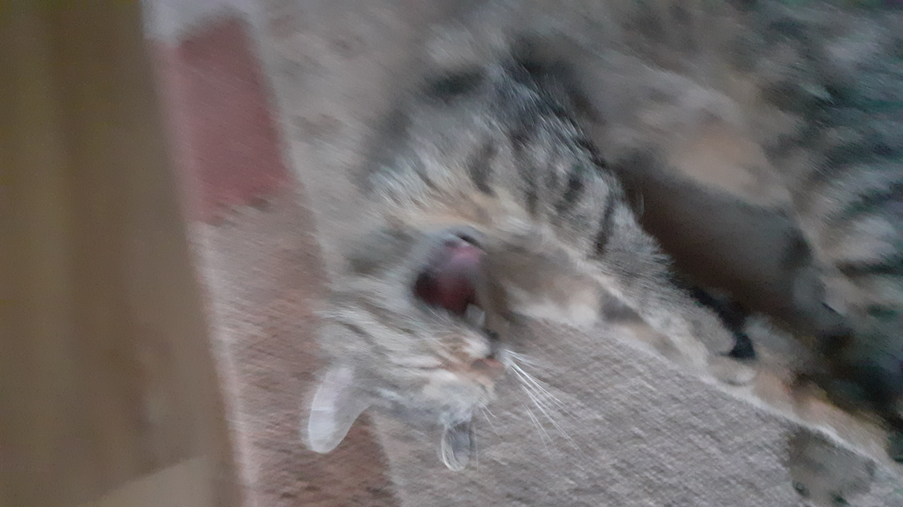

❰❰❰powróć
O Antonim
Dane o Osobniku
Imie: Antoni
Nazwisko: Syska
Wiek: 14
Płeć: Mężczyzna
Ulubiony kolor: Żółty
Samo-opis osobnika:
Cześć, jestem Antek, mam 14 lat i bardzo lubie wszystko związane z komputerami- to moje hobby. Gdy nie używam komputera ucze się, albo chodze gdzieś z przyjaciółmi. Mojimi ulubionymi przedmiotami są: Matematyka, fizyka i informatyka, ale za to nie lubie biologii (nie mam niczego do samego przedmiotu ale jest on bardzo trudny). Mam kota o imieniu "Kocie" (tak, zawsze w wołaczu, nie odmienia się)